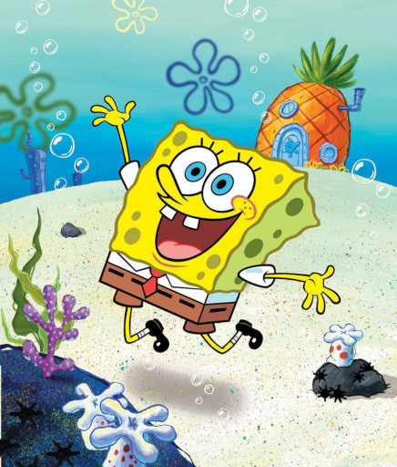
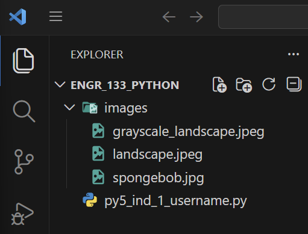
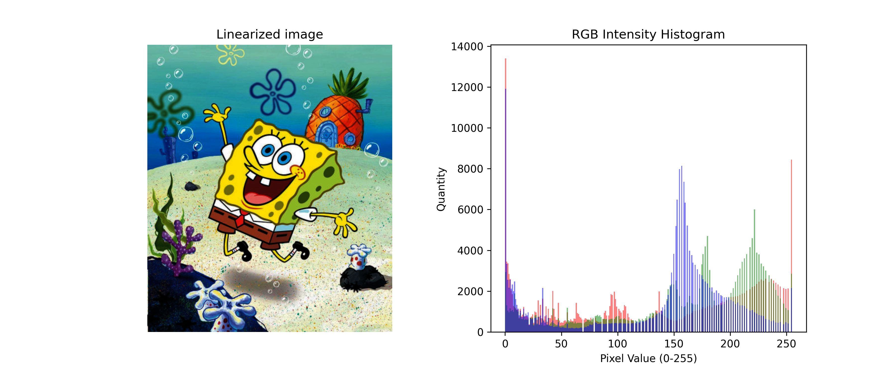
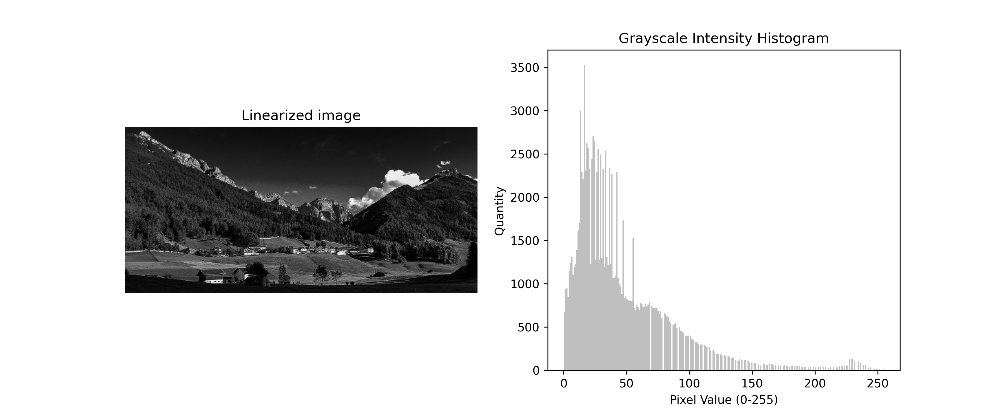
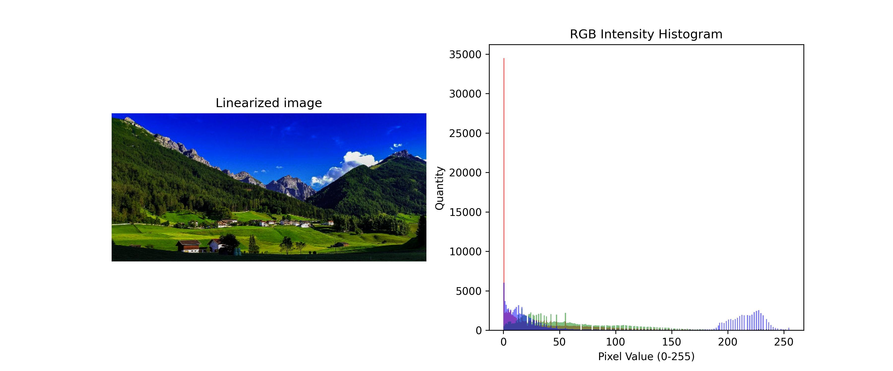

Jul 04, 2026 | 1028 words | 10 min read
15.3.1. Task 1#
Learning Objectives#
Utilize the
pathliblibrary to access and manage files in a directory.Manipulate matrices using NumPy.
Utilize
matplotlibfunctions to display data.Visualize the distribution of color intensities in an image.
Introduction#
Digital image processing plays a vital role across many areas of engineering, from medical diagnostics to satellite imaging. A key task in this field is analyzing an image’s color distribution, which can be visualized with a histogram where the x-axis represents intensity values (\(0\)–\(255\) for 8-bit images) and the y-axis shows the frequency of each value. This visualization reveals an image’s brightness, contrast, and overall color balance, and provides insights that are essential for applications such as image enhancement, segmentation, and object detection.
An image’s overall brightness, or luminance, can be calculated using a weighted sum of its red, green, and blue channel values. The weights (\(0.2126\), \(0.7152\), and \(0.0722\)) are derived from the sRGB color space and reflect the human eye’s sensitivity to different wavelengths of light. You can read more about relative luminance on Wikipedia. The formula for luminance is given in (15.8).
Task Instructions#
Develop a Python program that produces a color distribution histogram of a
user selected image to aid in image analysis. The program should allow the user to
select from a list of all images in their images folder.
Before writing your program, create a flowchart of your algorithm and save it as
py5_ind_1_username.pdf. Then, start
coding by making a copy of the
ENGR133_Python_Template.py
Python template. Name your program
py5_ind_1_username.py. You will also
need to create a folder named images within the same folder as your Python
script. Then, download each of the sample images in
Table 15.11 and place them into your images folder.
You can use your own images if you prefer, but ensure they are in a common format such
as PNG or JPEG.
Image |
Download |
|---|---|
 |
|
{kind=link}
{kind=link}
{kind=link}
{kind=link}
{kind=link}
{kind=link}
Note
Ensure that you have the correct folder open in VS Code to avoid errors. You can select your folder by opening VS Code, clicking File (at the top of your screen), clicking Open Folder…, and selecting your desired folder. Now when you open the Explorer pane you should see something similar to :

Fig. 15.13 Sample Folder Structure#
Your program should do the following:
Construct a menu that lists all images in your
imagesfolder and allows the user to select one by entering its corresponding number. Be sure to include an option to quit the program.Hint
The
iterdir()method from Python’spathlibmodule can be used to create a list of all files in a directory. Your output is allowed to have the files displayed in a different order than the sample output.from pathlib import Path path = Path('images') files = list(path.iterdir())
Hint
You will need to find a way to exclude non-image files from your menu. Path objects have a
suffixmethod that may be useful for this. You can read more about it in the official documentation.Load the selected image, verify the image’s data type, and normalize the pixel values.
Linearize the pixels in the image array as you did in Task 0.
Calculate the average luminance of the image and display the result in the terminal.
Plot the distribution of pixel intensity for the linearized image array.
Load Image Function#
Create a function named load_image that takes in the path of the image as a
string and returns a normalized np.array representing the image data.
Use Image.open(path) from the PIL module to load the image. Then convert the
resulting Image object into a NumPy array. Verify that the data type of your
NumPy array is numpy.uint8, which will have pixel values in the range
\([0, 255]\). If the image has any other data type, raise a ValueError
with the message “The image datatype is not unsigned 8-bit integer”, ending the program.
Read NumPy array attributes for more details about how to check this.
Finally, normalize the pixel values in the NumPy array to the range \([0.0, 1.0]\).
Calculate Luminance Function#
Create a function named calculate_luminance that takes in an
np.array of linearized pixel values and returns the average luminance of the
entire image array.
The luminance of an individual pixel is calculated using the following formula:
where \(R\), \(G\), and \(B\) are the linearized values of the red, green, and blue channels, respectively.
You will need to apply this formula to each pixel in the image array, and then calculate the average luminance across all pixels. You can use Common NumPy array methods to perform these calculations efficiently without needing to write explicit loops.
This function must return a single scalar float value representing the average
luminance of the image.
Plotting Function#
Create a function named plot_pixel_intensity with an np.array of
linearized pixel values as its argument.
Create a figure with two side-by-side subplots using matplotlib. Review
Multiple Plots for more information. Show the linearized image on the
left. On the right, plot an intensity histogram showing the distribution of pixel
values for each channel (red, green, and blue for color images, or gray for grayscale
images).
Note
For color images, plot three overlapping histograms (one for each channel) using the colors red, green, and blue. Use an alpha value of \(0.5\) to make the histograms semi-transparent so that overlapping areas can be seen. You will need to find a way to convert each channel’s values from a 2-dimensional array to a 1-dimensional array. Then the code to add the histogram for each channel to the plot should look something like this:
axes[1].hist(channel_values, bins=256, color='red', alpha=0.5)
Hint
Recall you can overlay multiple plots on the same axes by calling plotting functions
multiple times before calling plt.show(). Review
Basic Plotting: for a refresher.
Main Function#
In your main function, you will need to do the following:
Provide the menu of available images and prompt the user to select an image or quit the program.
Quit the program if selected.
Otherwise, load, verify the data type, and normalize the selected image using the
load_imagefunction.Linearize the pixel values in the image array using the
linearize_imagefunction you created in Task 0.Calculate the average luminance using the
calculate_luminancefunction and display the result.Plot the distribution of pixel intensity in the linearized array using the
plot_pixel_intensityfunction.Repeat.
Sample Output#
Use the values in Table 15.12 below to test your program.
Case |
User Input |
|---|---|
1 |
[1, ‘q’] |
2 |
[‘spam’, 2, ‘q’] |
3 |
[3, ‘q’] |
Ensure your program’s output matches the provided samples exactly. This includes all characters, white space, and punctuation. In the samples, user input is highlighted like this for clarity, but your program should not highlight user input in this way.
Case 1 Sample Output
$ python3 py5_ind_1_username.py Available images: 1. spongebob.jpg 2. grayscale_landscape.jpeg 3. landscape.jpeg Select an image (q to quit): 1 The average luminance of the image: 0.553
Available images: 1. spongebob.jpg 2. grayscale_landscape.jpeg 3. landscape.jpeg Select an image (q to quit): q

Fig. 15.14 Case_1_output.png#
Case 2 Sample Output
$ python3 py5_ind_1_username.py Available images: 1. spongebob.jpg 2. grayscale_landscape.jpeg 3. landscape.jpeg Select an image (q to quit): spam Invalid choice, please try again.
Available images: 1. spongebob.jpg 2. grayscale_landscape.jpeg 3. landscape.jpeg Select an image (q to quit): 2 The average luminance of the image: 0.178
Available images: 1. spongebob.jpg 2. grayscale_landscape.jpeg 3. landscape.jpeg Select an image (q to quit): q

Fig. 15.15 Case_2_output.png#
Case 3 Sample Output
$ python3 py5_ind_1_username.py Available images: 1. spongebob.jpg 2. grayscale_landscape.jpeg 3. landscape.jpeg Select an image (q to quit): 3 The average luminance of the image: 0.210
Available images: 1. spongebob.jpg 2. grayscale_landscape.jpeg 3. landscape.jpeg Select an image (q to quit): q

Fig. 15.16 Case_3_output.png#
Deliverables |
Description |
|---|---|
py5_ind_1_username.py |
Your completed Python code. |
py5_ind_1_username.pdf |
Flowchart(s) for this task. |